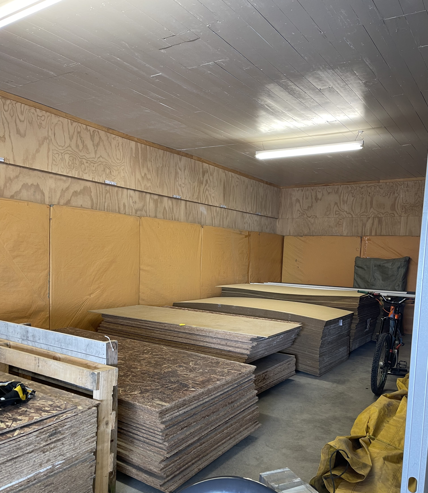
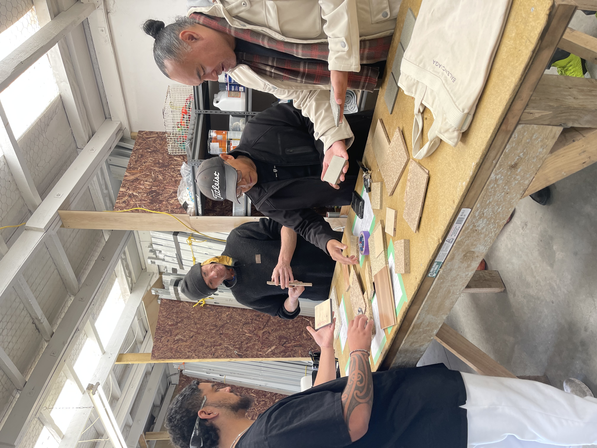
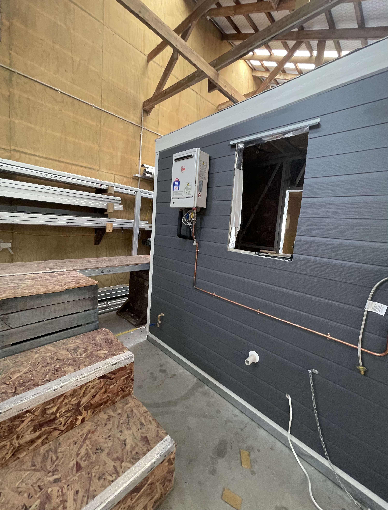
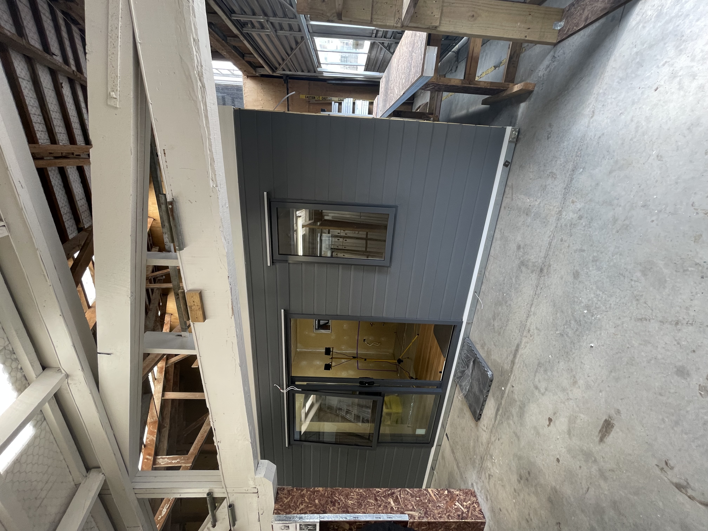
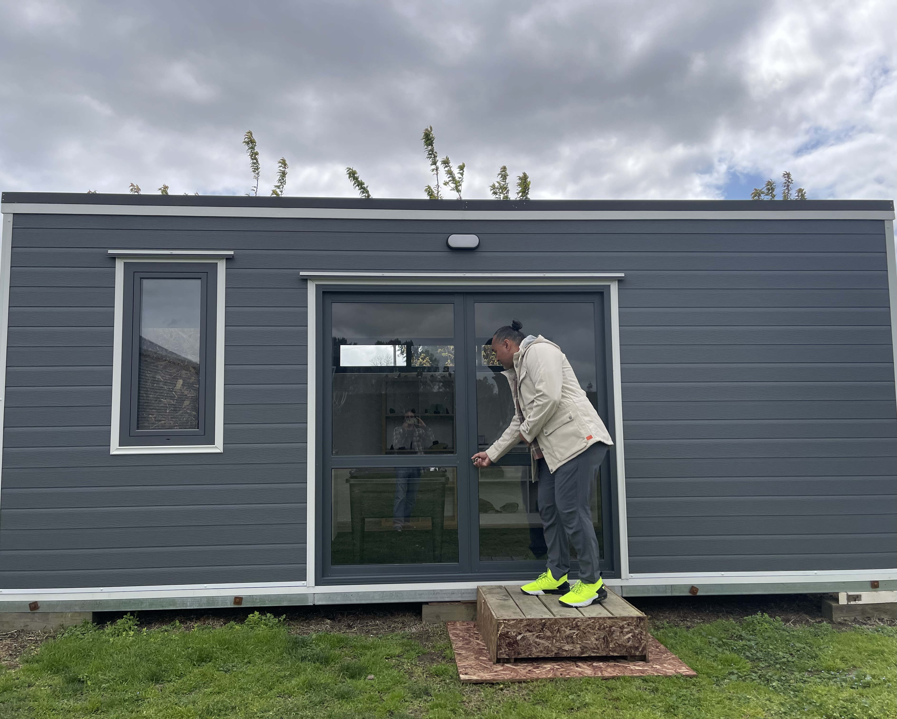
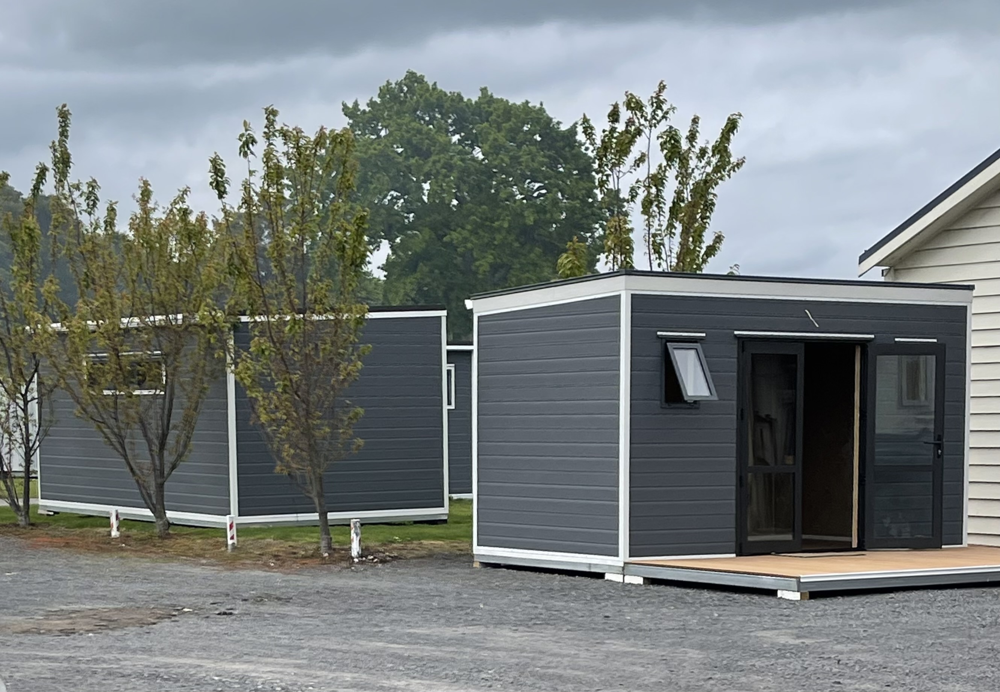
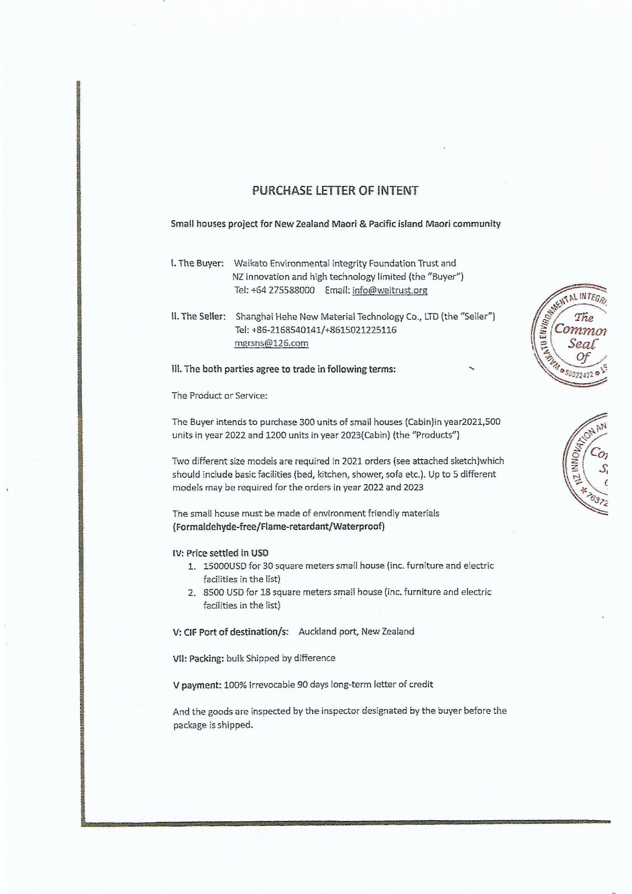
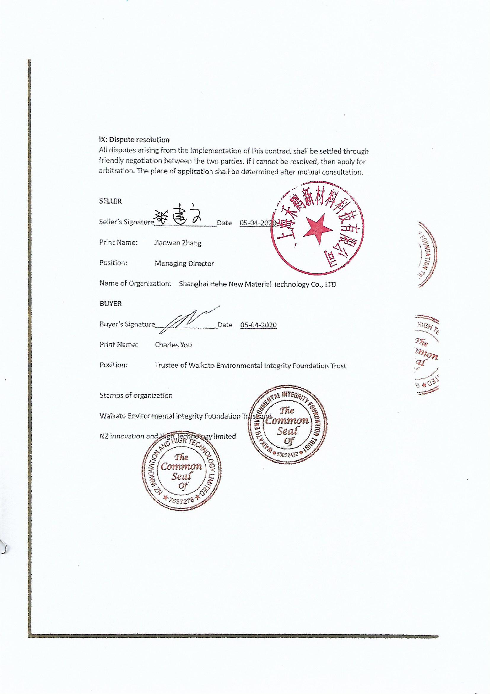
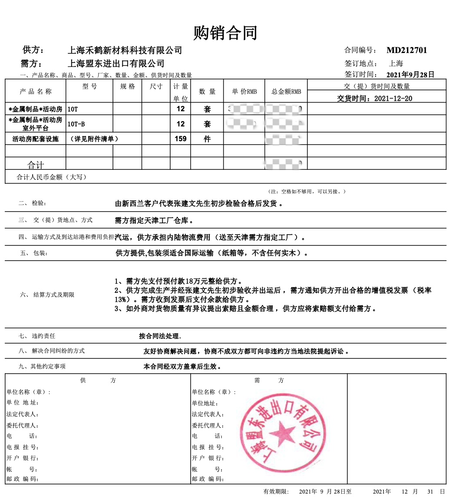

<div class="gallery">
  <div class="item"><div class="caption">3.0</div></div>
  <div class="item"><div class="caption">3.1</div></div>
  <div class="item"><div class="caption">3.2</div></div>
  <div class="item"><div class="caption">3.3</div></div>
  <div class="item"><div class="caption">3.4</div></div>
  <div class="item"><div class="caption">3.5</div></div>
  <div class="item"><div class="caption">3.6</div></div>
  <div class="item"><div class="caption">3.7</div></div>
  <div class="item"><div class="caption">3.8</div></div>
  <div class="item"><div class="caption">3.9</div></div>
</div>
<div class="intro">
  本項目於紐西蘭毛利人社區落地，由志願者使用環保材料現場建造樣板房，展示系統性建築技術。已與 <strong>毛利基金會</strong> 簽署合作協議，並與 <strong>中國外貿公司</strong> 簽訂出口與技術合作協議。<br><br>
  因疫情影響，合作推進階段受阻。為突破材料來源與成本限制，張建文於2022年9月前往紐西蘭，實地嘗試將火山灰（電廠煙囪灰、高爐廢渣等矽質材料）與專利膠凝劑結合，反覆試驗，最終成功研發出創新型環保建材，實現“以廢治廢”。
</div>
